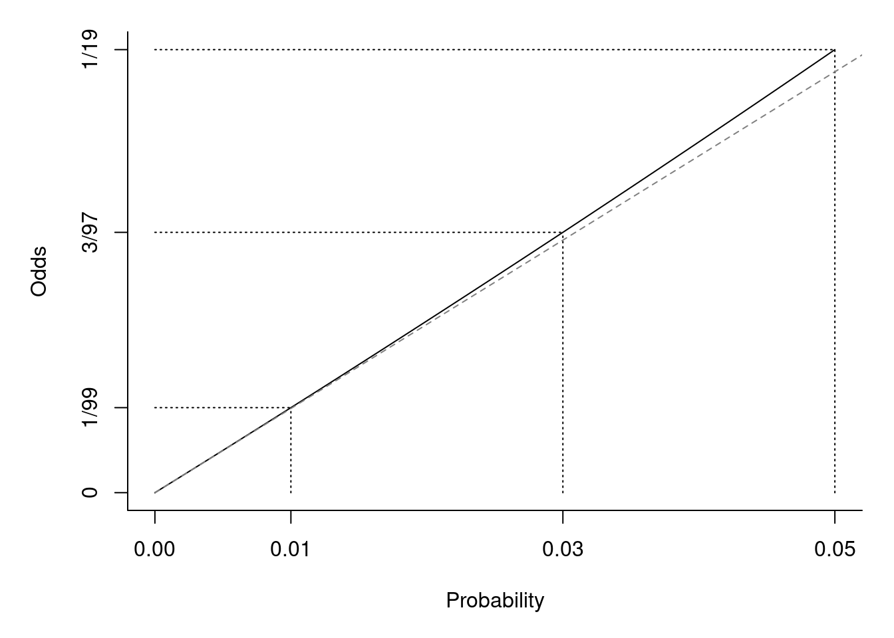
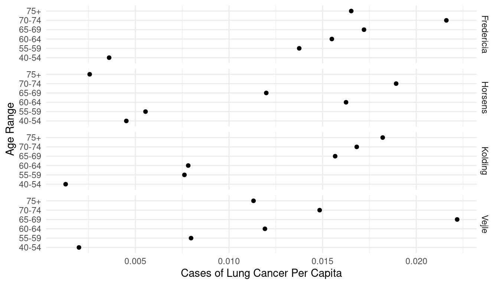
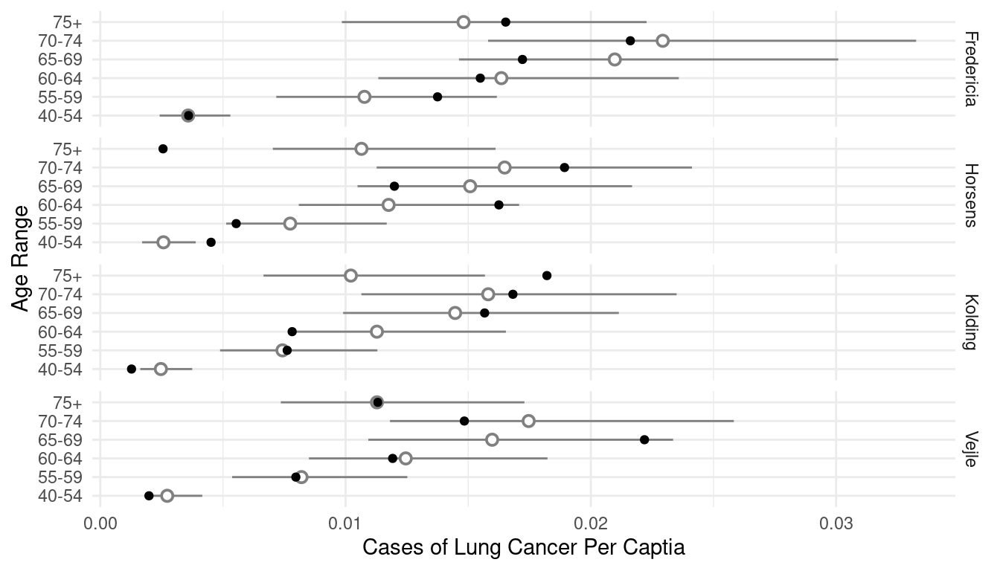
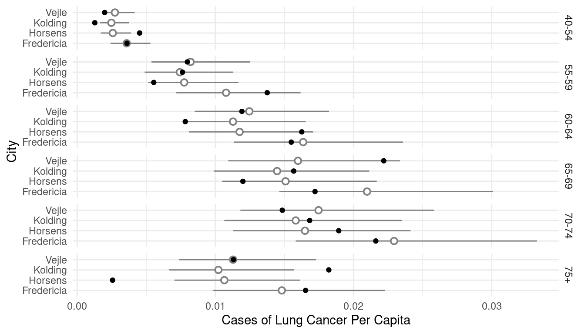
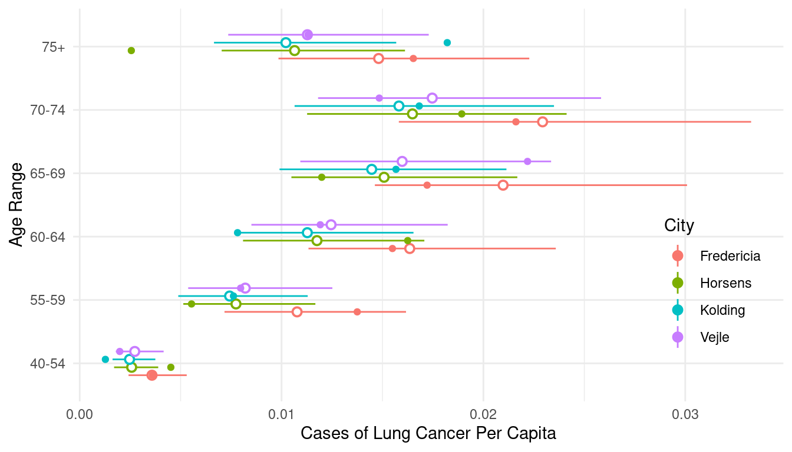
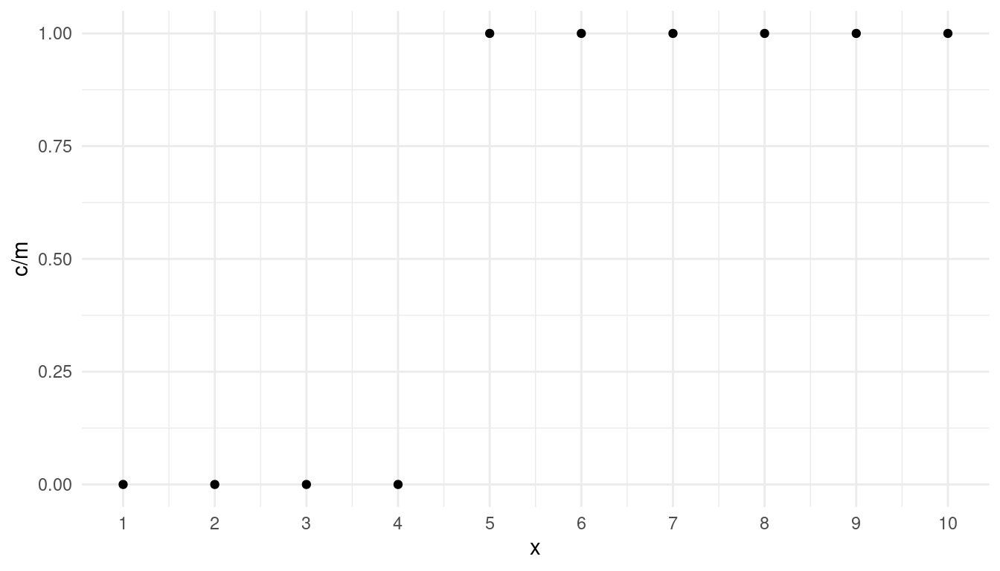
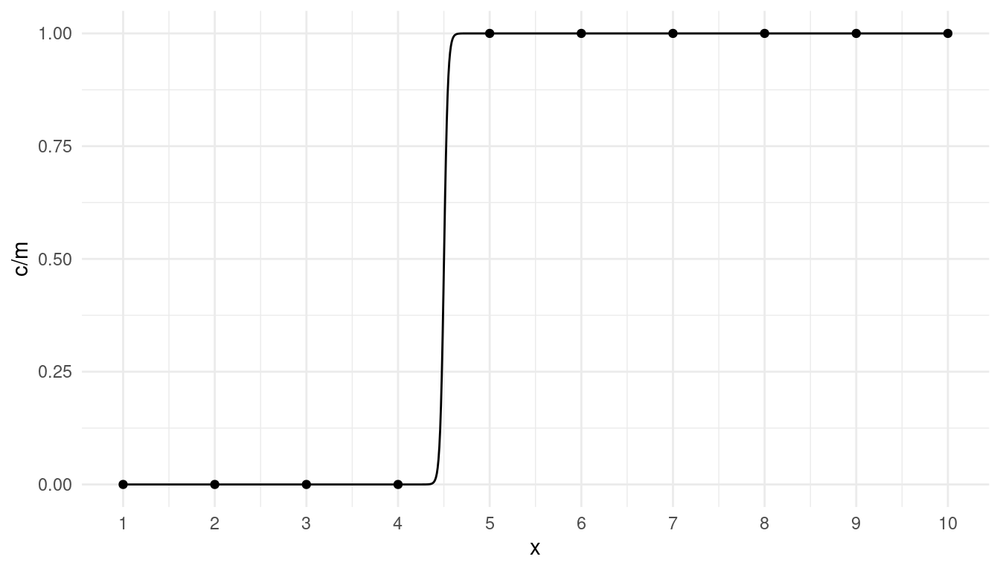
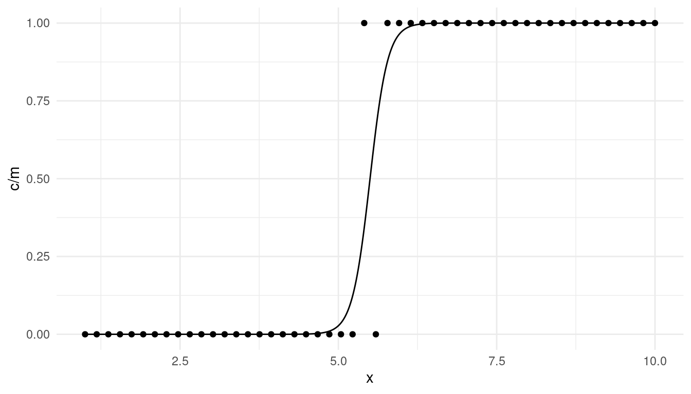

You can also download a PDF copy of this lecture.
The emmeans package can be used to produce many of
the same inferences that are obtained using contrast with
respect to estimated expected rates/probabilities as well as rate/odds
ratios.
Example: Consider the following Poisson regression
model for the ceriodaphniastrain data.
fleas <- trtools::ceriodaphniastrain
fleas$strain <- factor(fleas$strain, levels = c(1,2), labels = c("a","b"))
m <- glm(count ~ concentration * strain, family = poisson, data = fleas)
summary(m)$coefficients Estimate Std. Error z value Pr(>|z|)
(Intercept) 4.4811 0.04350 103.008 0.000e+00
concentration -1.5979 0.06244 -25.592 1.862e-144
strainb -0.3367 0.06704 -5.022 5.114e-07
concentration:strainb 0.1253 0.09385 1.336 1.817e-01We can compute the expected count for a concentration of two for each
strain using contrast.
trtools::contrast(m, tf = exp,
a = list(strain = c("a","b"), concentration = 2)) estimate lower upper
3.616 2.970 4.402
3.318 2.671 4.122And we can do it using emmeans if we specify
type = "response" and use the at argument to
specify the value of any quantitative explanatory variables.
library(emmeans)
emmeans(m, ~ strain, type = "response", at = list(concentration = 2)) strain rate SE df asymp.LCL asymp.UCL
a 3.62 0.363 Inf 2.97 4.40
b 3.32 0.367 Inf 2.67 4.12
Confidence level used: 0.95
Intervals are back-transformed from the log scale emmeans(m, ~ strain|concentration, type = "response", at = list(concentration = c(1,2,3)))concentration = 1:
strain rate SE df asymp.LCL asymp.UCL
a 17.872 0.815 Inf 16.343 19.54
b 14.467 0.725 Inf 13.113 15.96
concentration = 2:
strain rate SE df asymp.LCL asymp.UCL
a 3.616 0.363 Inf 2.970 4.40
b 3.318 0.367 Inf 2.671 4.12
concentration = 3:
strain rate SE df asymp.LCL asymp.UCL
a 0.732 0.118 Inf 0.534 1.00
b 0.761 0.136 Inf 0.537 1.08
Confidence level used: 0.95
Intervals are back-transformed from the log scale emmeans(m, ~ concentration|strain, type = "response", at = list(concentration = c(1,2,3)))strain = a:
concentration rate SE df asymp.LCL asymp.UCL
1 17.872 0.815 Inf 16.343 19.54
2 3.616 0.363 Inf 2.970 4.40
3 0.732 0.118 Inf 0.534 1.00
strain = b:
concentration rate SE df asymp.LCL asymp.UCL
1 14.467 0.725 Inf 13.113 15.96
2 3.318 0.367 Inf 2.671 4.12
3 0.761 0.136 Inf 0.537 1.08
Confidence level used: 0.95
Intervals are back-transformed from the log scale emmeans(m, ~ concentration*strain, type = "response", at = list(concentration = c(1,2,3))) concentration strain rate SE df asymp.LCL asymp.UCL
1 a 17.872 0.815 Inf 16.343 19.54
2 a 3.616 0.363 Inf 2.970 4.40
3 a 0.732 0.118 Inf 0.534 1.00
1 b 14.467 0.725 Inf 13.113 15.96
2 b 3.318 0.367 Inf 2.671 4.12
3 b 0.761 0.136 Inf 0.537 1.08
Confidence level used: 0.95
Intervals are back-transformed from the log scale Note that emmeans does produce a valid standard error on
the scale of the expected count/rate which
trtools::contrast does not (by default), and that
trtools::contrast will show the test statistic and p-value
on the log scale if we omit the tf = exp argument.
We can compute the rate ratio to compare the two strains at a given concentration.
trtools::contrast(m, tf = exp,
a = list(strain = "a", concentration = 2),
b = list(strain = "b", concentration = 2)) estimate lower upper
1.09 0.8132 1.46pairs(emmeans(m, ~ strain, type = "response",
at = list(concentration = 2)), infer = TRUE) contrast ratio SE df asymp.LCL asymp.UCL null z.ratio p.value
a / b 1.09 0.163 Inf 0.813 1.46 1 0.576 0.5648
Confidence level used: 0.95
Intervals are back-transformed from the log scale
Tests are performed on the log scale pairs(emmeans(m, ~ strain|concentration, type = "response",
at = list(concentration = c(1,2,3))), infer = TRUE)concentration = 1:
contrast ratio SE df asymp.LCL asymp.UCL null z.ratio p.value
a / b 1.235 0.0837 Inf 1.082 1.41 1 3.118 0.0018
concentration = 2:
contrast ratio SE df asymp.LCL asymp.UCL null z.ratio p.value
a / b 1.090 0.1628 Inf 0.813 1.46 1 0.576 0.5648
concentration = 3:
contrast ratio SE df asymp.LCL asymp.UCL null z.ratio p.value
a / b 0.961 0.2308 Inf 0.601 1.54 1 -0.164 0.8698
Confidence level used: 0.95
Intervals are back-transformed from the log scale
Tests are performed on the log scale If we apply pairs when using * we will get
all possible pairwise comparisons.
pairs(emmeans(m, ~ strain*concentration, type = "response",
at = list(concentration = c(1,2,3))), infer = TRUE) contrast ratio SE df asymp.LCL asymp.UCL null z.ratio p.value
a concentration1 / b concentration1 1.235 0.084 Inf 1.018 1.50 1 3.118 0.0225
a concentration1 / a concentration2 4.942 0.309 Inf 4.137 5.90 1 25.592 <.0001
a concentration1 / b concentration2 5.386 0.645 Inf 3.830 7.58 1 14.068 <.0001
a concentration1 / a concentration3 24.428 3.050 Inf 17.114 34.87 1 25.592 <.0001
a concentration1 / b concentration3 23.486 4.323 Inf 13.900 39.68 1 17.149 <.0001
b concentration1 / a concentration2 4.001 0.449 Inf 2.906 5.51 1 12.362 <.0001
b concentration1 / b concentration2 4.360 0.306 Inf 3.571 5.32 1 21.015 <.0001
b concentration1 / a concentration3 19.775 3.330 Inf 12.237 31.96 1 17.721 <.0001
b concentration1 / b concentration3 19.012 2.664 Inf 12.752 28.34 1 21.015 <.0001
a concentration2 / b concentration2 1.090 0.163 Inf 0.712 1.67 1 0.576 0.9926
a concentration2 / a concentration3 4.942 0.309 Inf 4.137 5.90 1 25.592 <.0001
a concentration2 / b concentration3 4.752 0.972 Inf 2.652 8.51 1 7.617 <.0001
b concentration2 / a concentration3 4.535 0.885 Inf 2.600 7.91 1 7.746 <.0001
b concentration2 / b concentration3 4.360 0.306 Inf 3.571 5.32 1 21.015 <.0001
a concentration3 / b concentration3 0.961 0.231 Inf 0.485 1.91 1 -0.164 1.0000
Confidence level used: 0.95
Conf-level adjustment: tukey method for comparing a family of 6 estimates
Intervals are back-transformed from the log scale
P value adjustment: tukey method for comparing a family of 6 estimates
Tests are performed on the log scale To force pairs to only do pairwise comparisons within
each value of concentration use by = "concentration".
pairs(emmeans(m, ~ strain*concentration, type = "response",
at = list(concentration = c(1,2,3))), by = "concentration", infer = TRUE)concentration = 1:
contrast ratio SE df asymp.LCL asymp.UCL null z.ratio p.value
a / b 1.235 0.0837 Inf 1.082 1.41 1 3.118 0.0018
concentration = 2:
contrast ratio SE df asymp.LCL asymp.UCL null z.ratio p.value
a / b 1.090 0.1628 Inf 0.813 1.46 1 0.576 0.5648
concentration = 3:
contrast ratio SE df asymp.LCL asymp.UCL null z.ratio p.value
a / b 0.961 0.2308 Inf 0.601 1.54 1 -0.164 0.8698
Confidence level used: 0.95
Intervals are back-transformed from the log scale
Tests are performed on the log scale Or alternatively use ~ strain|concentration in the
emmeans function.
What about the rate ratio for the effect of concentration?
trtools::contrast(m, tf = exp,
a = list(strain = c("a","b"), concentration = 2),
b = list(strain = c("a","b"), concentration = 1)) estimate lower upper
0.2023 0.1790 0.2287
0.2293 0.1999 0.2631emmeans(m, ~concentration|strain,
at = list(concentration = c(2,1)), type = "response")strain = a:
concentration rate SE df asymp.LCL asymp.UCL
2 3.62 0.363 Inf 2.97 4.40
1 17.87 0.815 Inf 16.34 19.54
strain = b:
concentration rate SE df asymp.LCL asymp.UCL
2 3.32 0.367 Inf 2.67 4.12
1 14.47 0.725 Inf 13.11 15.96
Confidence level used: 0.95
Intervals are back-transformed from the log scale pairs(emmeans(m, ~concentration|strain,
at = list(concentration = c(2,1)), type = "response"))strain = a:
contrast ratio SE df null z.ratio p.value
concentration2 / concentration1 0.202 0.0126 Inf 1 -25.592 <.0001
strain = b:
contrast ratio SE df null z.ratio p.value
concentration2 / concentration1 0.229 0.0161 Inf 1 -21.015 <.0001
Tests are performed on the log scale pairs(emmeans(m, ~concentration*strain,
at = list(concentration = c(2,1)), type = "response"), by = "strain")strain = a:
contrast ratio SE df null z.ratio p.value
concentration2 / concentration1 0.202 0.0126 Inf 1 -25.592 <.0001
strain = b:
contrast ratio SE df null z.ratio p.value
concentration2 / concentration1 0.229 0.0161 Inf 1 -21.015 <.0001
Tests are performed on the log scale What if we want to know if the rate ratios are significantly different?
emtrends(m, ~strain, var = "concentration") strain concentration.trend SE df asymp.LCL asymp.UCL
a -1.60 0.0624 Inf -1.72 -1.48
b -1.47 0.0701 Inf -1.61 -1.34
Confidence level used: 0.95 pairs(emtrends(m, ~strain, var = "concentration")) contrast estimate SE df z.ratio p.value
a - b -0.125 0.0939 Inf -1.335 0.1817Note that these are essentially slopes but for the log of the expected response. But the tests are still useful.
Example: Consider the following logistic regression
model for the insecticide data.
m <- glm(cbind(deaths, total-deaths) ~ insecticide * deposit,
family = binomial, data = trtools::insecticide)
summary(m)$coefficients Estimate Std. Error z value Pr(>|z|)
(Intercept) -2.81091 0.35845 -7.84177 4.442e-15
insecticideboth 1.22575 0.67176 1.82468 6.805e-02
insecticideDDT -0.03893 0.50722 -0.07676 9.388e-01
deposit 0.62207 0.07786 7.98986 1.351e-15
insecticideboth:deposit 0.37010 0.20897 1.77109 7.655e-02
insecticideDDT:deposit -0.14143 0.10376 -1.36301 1.729e-01We can use trtools::contrast or emmeans to
produce estimates of the probability of death for a given insecticide at
a given deposit value.
trtools::contrast(m, tf = plogis,
a = list(insecticide = c("g-BHC","both","DDT"), deposit = 5),
cnames = c("g-BHC","both","DDT")) estimate lower upper
g-BHC 0.5743 0.5027 0.6429
both 0.9669 0.9212 0.9865
DDT 0.3902 0.3289 0.4550emmeans(m, ~ insecticide, type = "response", at = list(deposit = 5)) insecticide prob SE df asymp.LCL asymp.UCL
g-BHC 0.574 0.0360 Inf 0.503 0.643
both 0.967 0.0149 Inf 0.921 0.987
DDT 0.390 0.0323 Inf 0.329 0.455
Confidence level used: 0.95
Intervals are back-transformed from the logit scale Again, emmeans produces a valid standard error on the
probability scale while trtools::contrast does not, and
trtools::contrast will produce test statistics and p-values
on the logit scale when the tf = plogis argument is
omitted.
We can compute odds ratios to compare the insecticides at a given deposit.
pairs(emmeans(m, ~ insecticide, type = "response",
at = list(deposit = 5)), adjust = "none", infer = TRUE) contrast odds.ratio SE df asymp.LCL asymp.UCL null z.ratio p.value
(g-BHC) / both 0.05 0.023 Inf 0.018 0.12 1 -6.275 <.0001
(g-BHC) / DDT 2.11 0.423 Inf 1.424 3.12 1 3.724 0.0002
both / DDT 45.71 22.260 Inf 17.600 118.72 1 7.849 <.0001
Confidence level used: 0.95
Intervals are back-transformed from the log odds ratio scale
Tests are performed on the log odds ratio scale trtools::contrast(m, tf = exp,
a = list(insecticide = c("g-BHC","g-BHC","both"), deposit = 5),
b = list(insecticide = c("both","DDT","DDT"), deposit = 5),
cnames = c("g-BHC / both", "g-BHC / DDT", "both / DDT")) estimate lower upper
g-BHC / both 0.04613 0.01765 0.1206
g-BHC / DDT 2.10871 1.42385 3.1230
both / DDT 45.71097 17.59954 118.7243We can flip/reverse the odds ratios if desired (which can also be done with rate ratios).
pairs(emmeans(m, ~ insecticide, type = "response",
at = list(deposit = 5)), adjust = "none", reverse = TRUE, infer = TRUE) contrast odds.ratio SE df asymp.LCL asymp.UCL null z.ratio p.value
both / (g-BHC) 21.677 10.628 Inf 8.293 56.67 1 6.275 <.0001
DDT / (g-BHC) 0.474 0.095 Inf 0.320 0.70 1 -3.724 0.0002
DDT / both 0.022 0.011 Inf 0.008 0.06 1 -7.849 <.0001
Confidence level used: 0.95
Intervals are back-transformed from the log odds ratio scale
Tests are performed on the log odds ratio scale trtools::contrast(m, tf = exp,
a = list(insecticide = c("both","DDT","DDT"), deposit = 5),
b = list(insecticide = c("g-BHC","g-BHC","both"), deposit = 5),
cnames = c("both / g-BHC", "DDT / g-BHC", "DDT / both")) estimate lower upper
both / g-BHC 21.67723 8.292521 56.66581
DDT / g-BHC 0.47422 0.320208 0.70232
DDT / both 0.02188 0.008423 0.05682We can estimate the odds ratios at several values of deposit.
pairs(emmeans(m, ~ insecticide|deposit, type = "response",
at = list(deposit = c(4,5,6))), adjust = "none", infer = TRUE)deposit = 4:
contrast odds.ratio SE df asymp.LCL asymp.UCL null z.ratio p.value
(g-BHC) / both 0.07 0.02 Inf 0.035 0.13 1 -8.239 <.0001
(g-BHC) / DDT 1.83 0.37 Inf 1.234 2.72 1 3.004 0.0027
both / DDT 27.41 9.12 Inf 14.274 52.62 1 9.947 <.0001
deposit = 5:
contrast odds.ratio SE df asymp.LCL asymp.UCL null z.ratio p.value
(g-BHC) / both 0.05 0.02 Inf 0.018 0.12 1 -6.275 <.0001
(g-BHC) / DDT 2.11 0.42 Inf 1.424 3.12 1 3.724 0.0002
both / DDT 45.71 22.26 Inf 17.600 118.72 1 7.849 <.0001
deposit = 6:
contrast odds.ratio SE df asymp.LCL asymp.UCL null z.ratio p.value
(g-BHC) / both 0.03 0.02 Inf 0.008 0.12 1 -5.080 <.0001
(g-BHC) / DDT 2.43 0.60 Inf 1.495 3.95 1 3.584 0.0003
both / DDT 76.24 51.04 Inf 20.529 283.13 1 6.474 <.0001
Confidence level used: 0.95
Intervals are back-transformed from the log odds ratio scale
Tests are performed on the log odds ratio scale pairs(emmeans(m, ~ insecticide*deposit, type = "response",
at = list(deposit = c(4,5,6))), by = "deposit", adjust = "none", infer = TRUE)deposit = 4:
contrast odds.ratio SE df asymp.LCL asymp.UCL null z.ratio p.value
(g-BHC) / both 0.07 0.02 Inf 0.035 0.13 1 -8.239 <.0001
(g-BHC) / DDT 1.83 0.37 Inf 1.234 2.72 1 3.004 0.0027
both / DDT 27.41 9.12 Inf 14.274 52.62 1 9.947 <.0001
deposit = 5:
contrast odds.ratio SE df asymp.LCL asymp.UCL null z.ratio p.value
(g-BHC) / both 0.05 0.02 Inf 0.018 0.12 1 -6.275 <.0001
(g-BHC) / DDT 2.11 0.42 Inf 1.424 3.12 1 3.724 0.0002
both / DDT 45.71 22.26 Inf 17.600 118.72 1 7.849 <.0001
deposit = 6:
contrast odds.ratio SE df asymp.LCL asymp.UCL null z.ratio p.value
(g-BHC) / both 0.03 0.02 Inf 0.008 0.12 1 -5.080 <.0001
(g-BHC) / DDT 2.43 0.60 Inf 1.495 3.95 1 3.584 0.0003
both / DDT 76.24 51.04 Inf 20.529 283.13 1 6.474 <.0001
Confidence level used: 0.95
Intervals are back-transformed from the log odds ratio scale
Tests are performed on the log odds ratio scale Here is how we can estimate the odds ratios for the effect of deposit.
emmeans(m, ~deposit|insecticide, at = list(deposit = c(2,1)), type = "response") # probabilityinsecticide = g-BHC:
deposit prob SE df asymp.LCL asymp.UCL
2 0.1727 0.0318 Inf 0.1190 0.244
1 0.1008 0.0261 Inf 0.0599 0.165
insecticide = both:
deposit prob SE df asymp.LCL asymp.UCL
2 0.5985 0.0566 Inf 0.4844 0.703
1 0.3560 0.0892 Inf 0.2049 0.542
insecticide = DDT:
deposit prob SE df asymp.LCL asymp.UCL
2 0.1314 0.0271 Inf 0.0867 0.194
1 0.0856 0.0232 Inf 0.0497 0.143
Confidence level used: 0.95
Intervals are back-transformed from the logit scale pairs(emmeans(m, ~deposit|insecticide, at = list(deposit = c(2,1)),
type = "response"), infer = TRUE) # odds ratiosinsecticide = g-BHC:
contrast odds.ratio SE df asymp.LCL asymp.UCL null z.ratio p.value
deposit2 / deposit1 1.86 0.145 Inf 1.60 2.17 1 7.990 <.0001
insecticide = both:
contrast odds.ratio SE df asymp.LCL asymp.UCL null z.ratio p.value
deposit2 / deposit1 2.70 0.523 Inf 1.84 3.94 1 5.116 <.0001
insecticide = DDT:
contrast odds.ratio SE df asymp.LCL asymp.UCL null z.ratio p.value
deposit2 / deposit1 1.62 0.111 Inf 1.41 1.85 1 7.007 <.0001
Confidence level used: 0.95
Intervals are back-transformed from the log odds ratio scale
Tests are performed on the log odds ratio scale We can also compare the odds ratios.
pairs(pairs(emmeans(m, ~deposit|insecticide, at = list(deposit = c(2,1)))), by = NULL) contrast estimate SE df z.ratio p.value
(deposit2 - deposit1 g-BHC) - (deposit2 - deposit1 both) -0.370 0.209 Inf -1.771 0.1794
(deposit2 - deposit1 g-BHC) - (deposit2 - deposit1 DDT) 0.141 0.104 Inf 1.363 0.3605
(deposit2 - deposit1 both) - (deposit2 - deposit1 DDT) 0.511 0.206 Inf 2.487 0.0344
Results are given on the log odds ratio (not the response) scale.
P value adjustment: tukey method for comparing a family of 3 estimates For odds ratios for a quantitative variable you can also compare
using emtrends.
pairs(emtrends(m, ~insecticide, var = "deposit")) contrast estimate SE df z.ratio p.value
(g-BHC) - both -0.370 0.209 Inf -1.771 0.1794
(g-BHC) - DDT 0.141 0.104 Inf 1.363 0.3605
both - DDT 0.511 0.206 Inf 2.487 0.0344
P value adjustment: tukey method for comparing a family of 3 estimates Here I have left off type = "response". Including it
will give ratios of odds ratios, which is a bit confusing, but if all we
care about is whether the odds ratios are significantly different this
is sufficient. Note that to avoid controlling for family-wise Type I
error rate include the option adjust = "none" as an
argument to pairs.
Suppose \(C_i\) has a binomial distribution with parameters \(p_i\) and \(m_i\) so that \[ P(C_i = c) = \binom{m_i}{c}p_i^y(1-p_i)^{m_i-c}. \] Define the expected count as \(E(C_i) = m_ip_i = \lambda_i\). Then \(p_i = \lambda_i/m_i\) so we can write \[ P(C_i = c) = \binom{m_i}{c}\left(\frac{\lambda_i}{m_i}\right)^y\left(1-\frac{\lambda_i}{m_i}\right)^{c-y}. \] Then it can be shown that \[ \lim_{m_i \rightarrow \infty} \binom{m_i}{c}\left(\frac{\lambda_i}{m_i}\right)^y\left(1-\frac{\lambda_i}{m_i}\right)^{m_i-y} = \frac{e^{\lambda_i}\lambda_i^y}{y!}, \] which is the Poisson distribution.
Thus in practice if \(p_i\) is small relative to \(m_i\) we can approximate a binomial distribution with a Poisson distribution. Furthermore there is a close relationship between the model parameters. In logistic regression we have \[ O_i = \exp(\beta_0 + \beta_1 x_{i1} + \beta_2 x_{i2} + \cdots + \beta_k x_{ik}), \] where \(O_i = p_i/(1-p_i)\) is the odds of the event. But when \(p_i\) is very small then \(O_i \approx p_i\).  So then \[ p_i \approx \exp(\beta_0 + \beta_1 x_{i1} + \beta_2 x_{i2} + \cdots + \beta_k x_{ik}), \] and because \(E(C_i) = m_ip_i\), \[ E(C_i) \approx \exp(\log m_i + \beta_0 + \beta_1 x_{i1} + \beta_2 x_{i2} + \cdots + \beta_k x_{ik}), \] where \(\log m_i\) is used as an offset in a Poisson regression model. That is, we can model a proportion (approximately) as a rate in a Poisson regression model for events that are rare and when \(m_i\) (i.e., the denominator of the proportion) is relatively large. This is relatively common in large-scale observational studies.
Example: Consider the following data on the incidence of lung cancer in four Danish cities.
library(ISwR) # for eba1977 data
head(eba1977) city age pop cases
1 Fredericia 40-54 3059 11
2 Horsens 40-54 2879 13
3 Kolding 40-54 3142 4
4 Vejle 40-54 2520 5
5 Fredericia 55-59 800 11
6 Horsens 55-59 1083 6p <- ggplot(eba1977, aes(x = age, y = cases/pop)) +
geom_point() + facet_grid(city ~ .) + coord_flip() +
labs(x = "Age Range", y = "Cases of Lung Cancer Per Capita") +
theme_minimal()
plot(p) Consider both a logistic and Poisson regression models to compare the cities while controlling for age.
m.b <- glm(cbind(cases, pop-cases) ~ city + age, family = binomial, data = eba1977)
cbind(summary(m.b)$coefficients, confint(m.b)) Estimate Std. Error z value Pr(>|z|) 2.5 % 97.5 %
(Intercept) -5.6262 0.2008 -28.021 9.132e-173 -6.0385 -5.249799
cityHorsens -0.3345 0.1827 -1.830 6.719e-02 -0.6946 0.023561
cityKolding -0.3764 0.1890 -1.991 4.646e-02 -0.7504 -0.007412
cityVejle -0.2760 0.1891 -1.459 1.444e-01 -0.6503 0.093162
age55-59 1.1070 0.2490 4.445 8.771e-06 0.6159 1.596828
age60-64 1.5291 0.2325 6.577 4.812e-11 1.0760 1.991225
age65-69 1.7819 0.2305 7.732 1.061e-14 1.3335 2.240675
age70-74 1.8727 0.2365 7.918 2.415e-15 1.4105 2.341695
age75+ 1.4289 0.2512 5.688 1.289e-08 0.9328 1.922467m.p <- glm(cases ~ offset(log(pop)) + city + age, family = poisson, data = eba1977)
cbind(summary(m.p)$coefficients, confint(m.p)) Estimate Std. Error z value Pr(>|z|) 2.5 % 97.5 %
(Intercept) -5.6321 0.2003 -28.125 4.911e-174 -6.0433 -5.256725
cityHorsens -0.3301 0.1815 -1.818 6.899e-02 -0.6878 0.025582
cityKolding -0.3715 0.1878 -1.978 4.789e-02 -0.7432 -0.004967
cityVejle -0.2723 0.1879 -1.450 1.472e-01 -0.6441 0.094356
age55-59 1.1010 0.2483 4.434 9.230e-06 0.6114 1.589441
age60-64 1.5186 0.2316 6.556 5.528e-11 1.0672 1.979110
age65-69 1.7677 0.2294 7.704 1.314e-14 1.3213 2.224503
age70-74 1.8569 0.2353 7.891 3.005e-15 1.3970 2.323556
age75+ 1.4197 0.2503 5.672 1.408e-08 0.9254 1.911381The expected proportion/rate of cases in Fredericia appears to be the highest. Let’s compare that city with the others while controlling for age.
trtools::contrast(m.b,
a = list(city = "Fredericia", age = "40-54"),
b = list(city = c("Horsens","Kolding","Vejle"), age = "40-54"),
cnames = c("vs Horsens","vs Kolding","vs Vejle"), tf = exp) estimate lower upper
vs Horsens 1.397 0.9766 1.999
vs Kolding 1.457 1.0059 2.110
vs Vejle 1.318 0.9097 1.909trtools::contrast(m.p,
a = list(city = "Fredericia", age = "40-54", pop = 1),
b = list(city = c("Horsens","Kolding","Vejle"), age = "40-54", pop = 1),
cnames = c("vs Horsens","vs Kolding","vs Vejle"), tf = exp) estimate lower upper
vs Horsens 1.391 0.9746 1.985
vs Kolding 1.450 1.0035 2.095
vs Vejle 1.313 0.9086 1.897Note that since there is no interaction in the model, contrasts for city will not depend on the age group. We can also compute the estimated expected proportion (i.e., probability) or expected rate for each model.
trtools::contrast(m.b, a = list(city = levels(eba1977$city), age = "40-54"), tf = plogis) estimate lower upper
0.003589 0.002424 0.005311
0.002571 0.001701 0.003885
0.002466 0.001625 0.003741
0.002726 0.001787 0.004155trtools::contrast(m.p, a = list(city = levels(eba1977$city), age = "40-54", pop = 1), tf = exp) estimate lower upper
0.003581 0.002419 0.005303
0.002574 0.001704 0.003890
0.002470 0.001628 0.003747
0.002727 0.001789 0.004158d <- expand.grid(city = unique(eba1977$city), age = unique(eba1977$age))
cbind(d, trtools::glmint(m.b, newdata = d)) city age fit low upp
1 Fredericia 40-54 0.003589 0.002424 0.005311
2 Horsens 40-54 0.002571 0.001701 0.003885
3 Kolding 40-54 0.002466 0.001625 0.003741
4 Vejle 40-54 0.002726 0.001787 0.004155
5 Fredericia 55-59 0.010780 0.007192 0.016129
6 Horsens 55-59 0.007739 0.005135 0.011648
7 Kolding 55-59 0.007424 0.004884 0.011270
8 Vejle 55-59 0.008201 0.005378 0.012487
9 Fredericia 60-64 0.016348 0.011360 0.023473
10 Horsens 60-64 0.011755 0.008104 0.017024
11 Kolding 60-64 0.011278 0.007702 0.016489
12 Vejle 60-64 0.012454 0.008520 0.018170
13 Fredericia 65-69 0.020952 0.014654 0.029876
14 Horsens 65-69 0.015086 0.010513 0.021604
15 Kolding 65-69 0.014476 0.009925 0.021069
16 Vejle 65-69 0.015979 0.010956 0.023252
17 Fredericia 70-74 0.022898 0.015845 0.032986
18 Horsens 70-74 0.016496 0.011299 0.024025
19 Kolding 70-74 0.015830 0.010679 0.023407
20 Vejle 70-74 0.017471 0.011844 0.025703
21 Fredericia 75+ 0.014812 0.009872 0.022169
22 Horsens 75+ 0.010646 0.007042 0.016065
23 Kolding 75+ 0.010214 0.006661 0.015633
24 Vejle 75+ 0.011280 0.007368 0.017232d <- expand.grid(city = unique(eba1977$city), age = unique(eba1977$age), pop = 1)
cbind(d, trtools::glmint(m.p, newdata = d)) city age pop fit low upp
1 Fredericia 40-54 1 0.003581 0.002419 0.005303
2 Horsens 40-54 1 0.002574 0.001704 0.003890
3 Kolding 40-54 1 0.002470 0.001628 0.003747
4 Vejle 40-54 1 0.002727 0.001789 0.004158
5 Fredericia 55-59 1 0.010769 0.007174 0.016167
6 Horsens 55-59 1 0.007742 0.005133 0.011676
7 Kolding 55-59 1 0.007427 0.004883 0.011297
8 Vejle 55-59 1 0.008202 0.005375 0.012517
9 Fredericia 60-64 1 0.016351 0.011335 0.023587
10 Horsens 60-64 1 0.011755 0.008092 0.017075
11 Kolding 60-64 1 0.011277 0.007690 0.016536
12 Vejle 60-64 1 0.012453 0.008506 0.018231
13 Fredericia 65-69 1 0.020976 0.014623 0.030090
14 Horsens 65-69 1 0.015080 0.010488 0.021681
15 Kolding 65-69 1 0.014467 0.009899 0.021141
16 Vejle 65-69 1 0.015976 0.010929 0.023354
17 Fredericia 70-74 1 0.022932 0.015810 0.033263
18 Horsens 70-74 1 0.016486 0.011266 0.024123
19 Kolding 70-74 1 0.015816 0.010646 0.023497
20 Vejle 70-74 1 0.017466 0.011810 0.025830
21 Fredericia 75+ 1 0.014811 0.009848 0.022273
22 Horsens 75+ 1 0.010647 0.007034 0.016116
23 Kolding 75+ 1 0.010214 0.006654 0.015681
24 Vejle 75+ 1 0.011280 0.007358 0.017292We can use this to make some helpful plots of the estimated rates (or probabilities) of lung cancer.
d <- expand.grid(age = unique(eba1977$age), city = unique(eba1977$city), pop = 1)
d <- cbind(d, trtools::glmint(m.p, newdata = d))
p <- ggplot(eba1977, aes(x = age, y = cases/pop)) +
geom_pointrange(aes(y = fit, ymin = low, ymax = upp),
shape = 21, fill = "white", data = d, color = grey(0.5)) +
geom_point() + facet_grid(city ~ .) + coord_flip() +
labs(x = "Age Range", y = "Cases of Lung Cancer Per Captia") +
theme_minimal()
plot(p)
p <- ggplot(eba1977, aes(x = city, y = cases/pop)) +
geom_pointrange(aes(y = fit, ymin = low, ymax = upp),
shape = 21, fill = "white", data = d, color = grey(0.5)) +
geom_point() + facet_grid(age ~ .) + coord_flip() +
labs(x = "City", y = "Cases of Lung Cancer Per Capita") +
theme_minimal()
plot(p)
p <- ggplot(eba1977, aes(x = age, y = cases/pop, color = city)) +
geom_pointrange(aes(y = fit, ymin = low, ymax = upp),
shape = 21, fill = "white", data = d,
position = position_dodge(width = 0.5)) +
geom_point(position = position_dodge(width = 0.5)) +
coord_flip() +
labs(x = "Age Range", y = "Cases of Lung Cancer Per Capita",
color = "City") +
theme_minimal() +
theme(legend.position = "inside", legend.position.inside = c(0.9,0.3))
plot(p)
Some GLMs are prone to numerical problems due to (nearly) infinite parameter estimates.
Example: Consider the following data.
mydata <- data.frame(m = rep(20, 10), c = rep(c(0,20), c(4,6)), x = 1:10)
mydata m c x
1 20 0 1
2 20 0 2
3 20 0 3
4 20 0 4
5 20 20 5
6 20 20 6
7 20 20 7
8 20 20 8
9 20 20 9
10 20 20 10p <- ggplot(mydata, aes(x = x, y = c/m)) + theme_minimal() +
geom_point() + scale_x_continuous(breaks = 1:10)
plot(p) If we try to estimate a logistic regression model we get errors and some extreme estimates, standard errors, and confidence intervals.
m <- glm(cbind(c,m-c) ~ x, family = binomial, data = mydata)Warning: glm.fit: algorithm did not convergeWarning: glm.fit: fitted probabilities numerically 0 or 1 occurredsummary(m)$coefficients Estimate Std. Error z value Pr(>|z|)
(Intercept) -212.11 114489 -0.001853 0.9985
x 47.12 25082 0.001879 0.9985confint(m)Warning: glm.fit: fitted probabilities numerically 0 or 1 occurred
Warning: glm.fit: fitted probabilities numerically 0 or 1 occurred
Warning: glm.fit: fitted probabilities numerically 0 or 1 occurredWarning: glm.fit: algorithm did not convergeWarning: glm.fit: fitted probabilities numerically 0 or 1 occurred
Warning: glm.fit: fitted probabilities numerically 0 or 1 occurred
Warning: glm.fit: fitted probabilities numerically 0 or 1 occurred 2.5 % 97.5 %
(Intercept) -29559 -28057
x 7969 1966But we can still plot the model.
d <- data.frame(x = seq(1, 10, length = 1000))
d$yhat <- predict(m, newdata = d, type = "response")
p <- p + geom_line(aes(y = yhat), data = d)
plot(p) The problem is that the estimation procedure “wants” the curve to be a step function, but that only occurs as \(\beta_1 \rightarrow \infty\), and the value of \(x\) where the estimated expected response is 0.5 equals \(-\beta_0/\beta_1\), and for the step function that would be 4.5, so the estimation procedure “wants” the estimate of \(\beta_0\) to be \(-\beta_14.5 = -\infty\). This is called separation. It is fairly obvious with a single explanatory variable, but much less so with multiple explanatory variables. The example above shows complete separation because we can separate the values of \(y\) based on the values of \(x\). Quasi-separation occurs when this is almost true as in the following example.
mydata <- data.frame(m = rep(20, 50), x = seq(1, 10, length = 50),
c = rep(c(0,20,0,20), c(24,1,1,24)))
m <- glm(cbind(c,m-c) ~ x, family = binomial, data = mydata)Warning: glm.fit: fitted probabilities numerically 0 or 1 occurredsummary(m)$coefficients Estimate Std. Error z value Pr(>|z|)
(Intercept) -39.231 5.542 -7.079 1.448e-12
x 7.133 1.006 7.087 1.371e-12confint(m)Warning: glm.fit: fitted probabilities numerically 0 or 1 occurred
Warning: glm.fit: fitted probabilities numerically 0 or 1 occurred
Warning: glm.fit: fitted probabilities numerically 0 or 1 occurred
Warning: glm.fit: fitted probabilities numerically 0 or 1 occurred
Warning: glm.fit: fitted probabilities numerically 0 or 1 occurred
Warning: glm.fit: fitted probabilities numerically 0 or 1 occurred
Warning: glm.fit: fitted probabilities numerically 0 or 1 occurred
Warning: glm.fit: fitted probabilities numerically 0 or 1 occurred
Warning: glm.fit: fitted probabilities numerically 0 or 1 occurred
Warning: glm.fit: fitted probabilities numerically 0 or 1 occurred
Warning: glm.fit: fitted probabilities numerically 0 or 1 occurred
Warning: glm.fit: fitted probabilities numerically 0 or 1 occurred 2.5 % 97.5 %
(Intercept) -51.696 -29.767
x 5.414 9.397d <- data.frame(x = seq(1, 10, length = 10000))
d$yhat <- predict(m, newdata = d, type = "response")
p <- ggplot(mydata, aes(x = x, y = c/m)) + theme_minimal() +
geom_point() + geom_line(aes(y = yhat), data = d)
plot(p)
Example: Consider the following data.
mydata <- data.frame(m = c(100,100), c = c(25,100), group = c("control","treatment"))
mydata m c group
1 100 25 control
2 100 100 treatmentm <- glm(cbind(c,m-c) ~ group, family = binomial, data = mydata)
summary(m)$coefficients Estimate Std. Error z value Pr(>|z|)
(Intercept) -1.099 2.309e-01 -4.7571308 1.964e-06
grouptreatment 28.410 5.169e+04 0.0005496 9.996e-01confint(m)Warning: glm.fit: fitted probabilities numerically 0 or 1 occurred
Warning: glm.fit: fitted probabilities numerically 0 or 1 occurred
Warning: glm.fit: fitted probabilities numerically 0 or 1 occurred
Warning: glm.fit: fitted probabilities numerically 0 or 1 occurred
Warning: glm.fit: fitted probabilities numerically 0 or 1 occurred
Warning: glm.fit: fitted probabilities numerically 0 or 1 occurred
Warning: glm.fit: fitted probabilities numerically 0 or 1 occurred
Warning: glm.fit: fitted probabilities numerically 0 or 1 occurred
Warning: glm.fit: fitted probabilities numerically 0 or 1 occurred
Warning: glm.fit: fitted probabilities numerically 0 or 1 occurred
Warning: glm.fit: fitted probabilities numerically 0 or 1 occurred
Warning: glm.fit: fitted probabilities numerically 0 or 1 occurred
Warning: glm.fit: fitted probabilities numerically 0 or 1 occurred
Warning: glm.fit: fitted probabilities numerically 0 or 1 occurred
Warning: glm.fit: fitted probabilities numerically 0 or 1 occurred
Warning: glm.fit: fitted probabilities numerically 0 or 1 occurred
Warning: glm.fit: fitted probabilities numerically 0 or 1 occurred
Warning: glm.fit: fitted probabilities numerically 0 or 1 occurred
Warning: glm.fit: fitted probabilities numerically 0 or 1 occurred 2.5 % 97.5 %
(Intercept) -1.571 -0.6611
grouptreatment -1849.427 18872.0265A similar problem can happen in Poisson regression where the observed count or rate in a category is zero.
Example: Consider the following data and model.
mydata <- data.frame(y = c(20, 10, 50, 15, 0), x = letters[1:5])
mydata y x
1 20 a
2 10 b
3 50 c
4 15 d
5 0 em <- glm(y ~ x, family = poisson, data = mydata)
summary(m)$coefficients Estimate Std. Error z value Pr(>|z|)
(Intercept) 2.9957 2.236e-01 13.3973220 6.268e-41
xb -0.6931 3.873e-01 -1.7896983 7.350e-02
xc 0.9163 2.646e-01 3.4632534 5.337e-04
xd -0.2877 3.416e-01 -0.8422469 3.996e-01
xe -25.2983 4.225e+04 -0.0005988 9.995e-01confint(m)Warning: glm.fit: fitted rates numerically 0 occurred
Warning: glm.fit: fitted rates numerically 0 occurred
Warning: glm.fit: fitted rates numerically 0 occurred
Warning: glm.fit: fitted rates numerically 0 occurred
Warning: glm.fit: fitted rates numerically 0 occurred
Warning: glm.fit: fitted rates numerically 0 occurred
Warning: glm.fit: fitted rates numerically 0 occurred
Warning: glm.fit: fitted rates numerically 0 occurred
Warning: glm.fit: fitted rates numerically 0 occurred
Warning: glm.fit: fitted rates numerically 0 occurred
Warning: glm.fit: fitted rates numerically 0 occurred
Warning: glm.fit: fitted rates numerically 0 occurred
Warning: glm.fit: fitted rates numerically 0 occurred
Warning: glm.fit: fitted rates numerically 0 occurred
Warning: glm.fit: fitted rates numerically 0 occurred
Warning: glm.fit: fitted rates numerically 0 occurred
Warning: glm.fit: fitted rates numerically 0 occurred
Warning: glm.fit: fitted rates numerically 0 occurred
Warning: glm.fit: fitted rates numerically 0 occurred
Warning: glm.fit: fitted rates numerically 0 occurred
Warning: glm.fit: fitted rates numerically 0 occurred
Warning: glm.fit: fitted rates numerically 0 occurred
Warning: glm.fit: fitted rates numerically 0 occurred
Warning: glm.fit: fitted rates numerically 0 occurred
Warning: glm.fit: fitted rates numerically 0 occurredError: no valid set of coefficients has been found: please supply starting valuesThere are some solutions to this problem, depending on the circumstances.
In simple cases such as the logistic regression example with a control and treatment group, a nonparametric approach could be used for a significance test (e.g., Fisher’s exact test).
In some cases with a categorical explanatory variable, we can omit the level(s) where the observed count is zero (in Poisson regression), or the observed proportion is 0 or 1 (in logistic regression). Clearly this precludes inferences concerning that level or its relationship with other levels.
For logistic regression (or similar models) a “penalized” or “bias-reduced” estimation method can be used for quasi-separation (see the logistf and brglm packages).